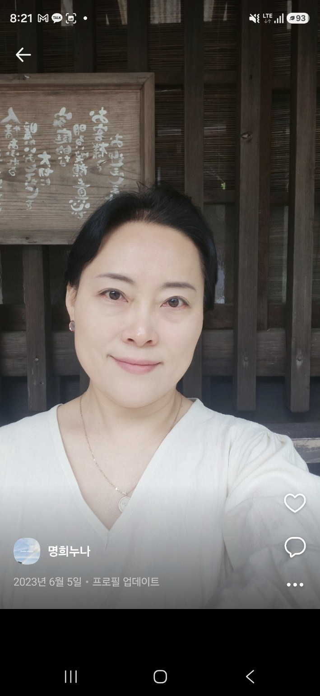

당신의 마음만이 아니라
당신의 삶을 함께 봅니다.
몸이 지치고 마음이 흔들리고, 사람과의 관계까지 어려워질 때 무엇부터 이야기해야 할지 알기 어려울 수 있습니다.
정인은 하나씩 떼어 보기보다 몸 · 마음 · 관계가 어떻게 연결되어 있는지 함께 살펴봅니다.

이런 마음으로 찾아와도 됩니다.
무엇이 문제인지 정확히 정리해서 오지 않아도 됩니다.
계속 지치고 무겁다면
큰 문제가 있는 것 같지는 않은데 마음과 에너지가 예전 같지 않을 때.
설명하기 어렵다면
“뭐가 힘든지는 모르겠는데 힘들다.” 그 정도의 이야기부터 시작해도 됩니다.
관계가 반복된다면
사람만 달라질 뿐 비슷한 갈등과 상처가 계속될 때.
몸과 마음이 함께 흔들린다면
질병, 회복, 돌봄, 상실, 노화 등 몸의 변화가 삶 전체에 영향을 줄 때.
나를 더 알고 싶다면
큰 문제가 있어서가 아니라 나의 생각·감정·관계 방식을 이해하고 싶을 때.
혼자 버티는 게 지쳤다면
누군가에게 이야기를 꺼내보고 싶지만 어디서 시작해야 할지 모르겠을 때.
당신에게 필요한 방식으로
시작할 수 있습니다.
지금 가장 힘든 일부터 시작해 감정, 관계, 생활, 지나온 경험을 함께 살펴봅니다.
↗유형을 정하는 데 그치지 않고 반복되는 생각·감정·관계의 방식을 이해하는 데 활용합니다.
↗말로 설명하기 어려운 감정과 관계를 장면과 역할을 통해 경험하고 바라봅니다.
↗비슷한 고민을 가진 사람들과 배우고, 이야기하고, 경험하는 프로그램입니다.
↗하나의 마음만
보고 싶지 않았습니다.
당신을 이해하는 방법이 하나뿐이라고 생각하지 않습니다.
질병, 통증, 수면, 회복, 돌봄처럼 몸에서 시작된 변화가 마음에 미치는 영향도 함께 봅니다.
정신간호, 상담, 심리극, 에니어그램 등 여러 관점을 필요에 따라 활용합니다.
가족, 직장, 돌봄, 인간관계와 같은 상담실 밖의 삶도 함께 바라봅니다.

상태 · 질병 · 회복 · 수면 · 피로
감정 · 불안 · 스트레스 · 자기이해
가족 · 사람 · 일 · 삶의 환경

나를 만나는 사람이
어떤 사람인지 궁금하다면.
몸이 아픈 사람, 마음이 아픈 사람, 그리고 삶의 마지막을 준비하는 사람까지 만나왔습니다.
청주의료원 임상현장과 정신건강복지센터에서 사람의 어려움이 어느 한 부분만의 문제가 아니라는 것을 경험했습니다.
정신건강 · 내과 · 외과 · 호스피스
상임팀장
사회복지사 2급 · 정신간호학 석사
당신이 머무는 시간까지
생각했습니다.
이야기하고, 쉬고, 배우고, 함께할 수 있도록 공간을 나누었습니다.
 함께 배우고 이야기하는 상담 · 교육공간이야기에 집중하는 상담실몸과 마음을 쉬게 하는 명상실
함께 배우고 이야기하는 상담 · 교육공간이야기에 집중하는 상담실몸과 마음을 쉬게 하는 명상실 편안하게 머무는 원장실
편안하게 머무는 원장실 공간 전체 구성
공간 전체 구성상담이 끝난 뒤에도
삶은 계속되니까.
개인상담이 필요한 시간도 있지만, 사람들과 만나고 배우며 회복하는 시간이 필요할 수도 있습니다.
비슷한 경험을 나누는 모임
몸과 마음을 천천히 바라보는 시간
관계를 만들고 머무는 활동
삶의 시기에 필요한 마음교육
경험을 나누며 서로 지지하는 관계
처음이라면
이렇게 시작하면 됩니다.
살펴보기
나에게 맞는 상담이나 프로그램을 살펴봅니다.
문의 · 예약
온라인 또는 전화로 문의하고 일정을 정합니다.
첫 만남
지금의 어려움과 필요한 도움을 함께 정리합니다.
필요한 순간,
편하게 시작할 수 있도록.
정보 확인 필요
회기 시간 및 운영요일
정보 확인 필요
상담·프로그램별 비용
안성 옥산동
아니스퀘어 A동 210호 · 최종 주소 확인
정보 확인 필요
전화 · 카카오톡 · 온라인 예약
예약 연락처와 운영 정보는 확인 후 안내하겠습니다.